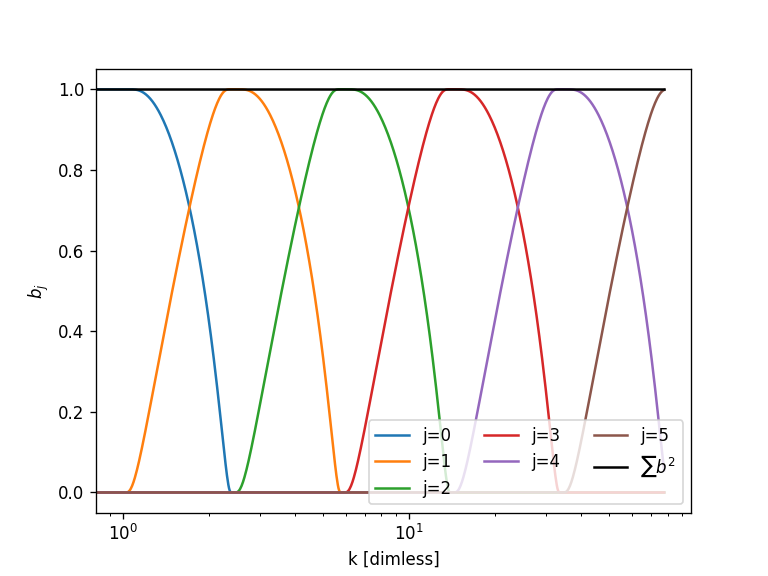
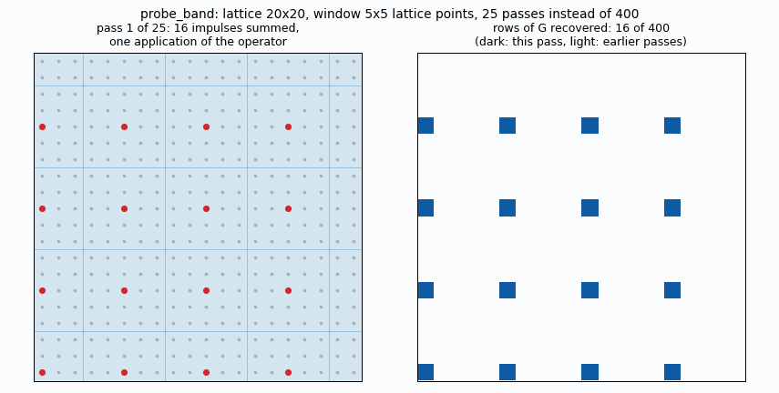
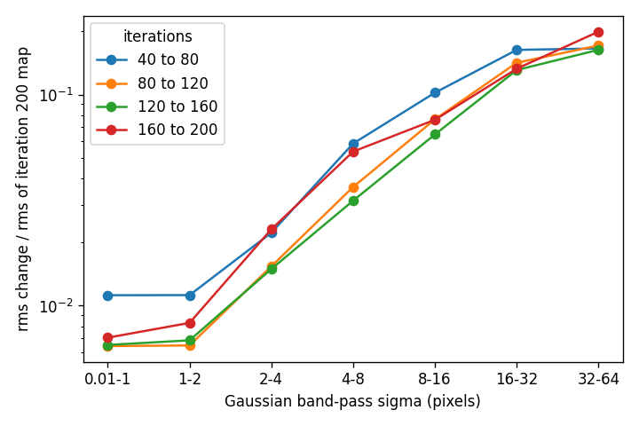
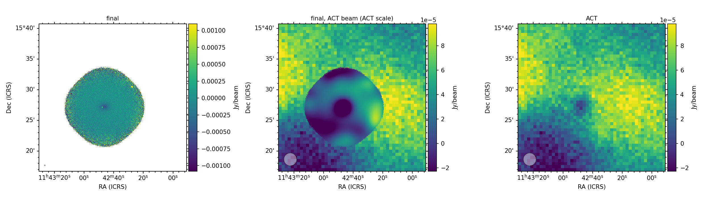
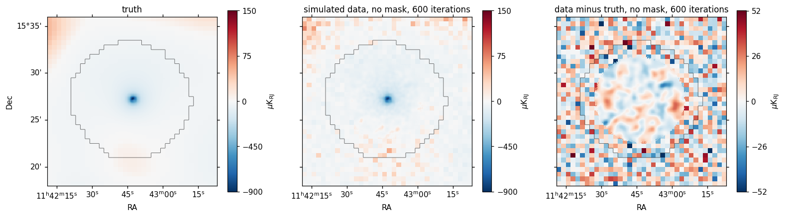
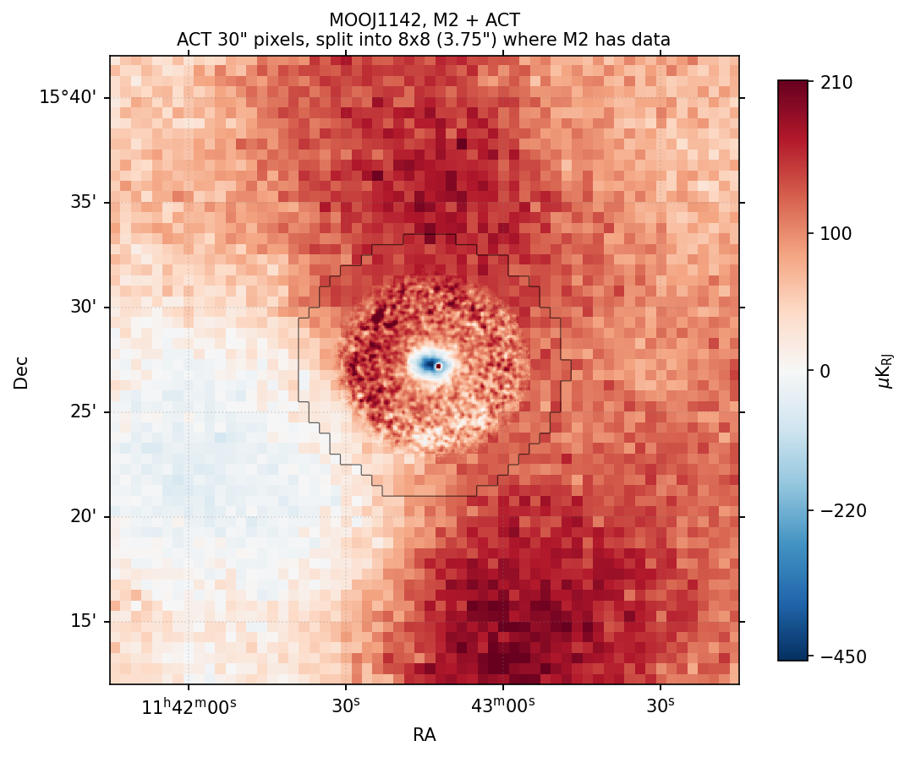

<title>Needlet Mapmaking</title>
<meta name="claude:viewport-fit-sides" content="cover">
<link rel="stylesheet" href="https://fonts.googleapis.com/css2?family=IBM+Plex+Mono:wght@400;500&family=IBM+Plex+Sans:ital,wght@0,400;0,500;0,600;1,400&display=swap">
<style>
/* Layout: one reading column, numbered steps down a left rail that marks the true order of the pipeline. */
:root {
  --bg: #f6f7f9;
  --surface: #ffffff;
  --fg: #1c2330;
  --muted: #566073;
  --line: #d9dde5;
  --accent: #2f4fb3;
  --accent-soft: #e6ebf9;
  --warn: #9a5b00;
  --warn-soft: #fbf0dc;
  --code-bg: #eceff4;
  --sans: "IBM Plex Sans", system-ui, -apple-system, "Segoe UI", sans-serif;
  --mono: "IBM Plex Mono", ui-monospace, "SF Mono", Menlo, monospace;
}
@media (prefers-color-scheme: dark) {
  :root:not([data-theme="light"]) {
    --bg: #12161d;
    --surface: #1a2029;
    --fg: #e4e8ef;
    --muted: #9aa5b8;
    --line: #2c3544;
    --accent: #8fa8f0;
    --accent-soft: #232c46;
    --warn: #e5b469;
    --warn-soft: #3a2f1a;
    --code-bg: #232b38;
    color-scheme: dark;
  }
}
:root[data-theme="dark"] {
  --bg: #12161d;
  --surface: #1a2029;
  --fg: #e4e8ef;
  --muted: #9aa5b8;
  --line: #2c3544;
  --accent: #8fa8f0;
  --accent-soft: #232c46;
  --warn: #e5b469;
  --warn-soft: #3a2f1a;
  --code-bg: #232b38;
  color-scheme: dark;
}
* { box-sizing: border-box; }
body {
  background: var(--bg);
  color: var(--fg);
  font-family: var(--sans);
  font-size: 16px;
  line-height: 1.6;
  padding-block: 40px 72px;
  padding-left: max(16px, env(safe-area-inset-left, 0px));
  padding-right: max(16px, env(safe-area-inset-right, 0px));
}
main { max-width: 760px; margin: 0 auto; min-width: 0; }
h1, h2, h3 { text-wrap: balance; line-height: 1.2; margin: 0; }
h1 { font-size: clamp(1.9rem, 5vw, 2.6rem); font-weight: 600; letter-spacing: -0.02em; }
h2 { font-size: 1.35rem; font-weight: 600; margin-top: 56px; letter-spacing: -0.01em; }
h3 { font-size: 1.05rem; font-weight: 600; }
p { margin: 12px 0 0; max-width: 68ch; }
.lede { font-size: 1.1rem; color: var(--muted); margin-top: 16px; }
.meta { font-family: var(--mono); font-size: 0.78rem; color: var(--muted); text-transform: uppercase; letter-spacing: 0.08em; margin-bottom: 14px; }
code { font-family: var(--mono); font-size: 0.86em; background: var(--code-bg); padding: 1px 5px; border-radius: 3px; }
a { color: var(--accent); }
.eq {
  font-family: var(--mono); font-size: 0.88rem; background: var(--surface);
  border: 1px solid var(--line); border-radius: 6px; padding: 12px 16px; margin: 16px 0 0;
  overflow-x: auto; line-height: 1.8; white-space: nowrap;
}
.legend { display: grid; grid-template-columns: max-content 1fr; gap: 6px 18px; margin: 16px 0 0; font-size: 0.95rem; }
.legend dt { font-family: var(--mono); color: var(--accent); }
.legend dd { margin: 0; min-width: 0; }
ol.steps { list-style: none; counter-reset: step; margin: 24px 0 0; padding: 0; }
ol.steps > li {
  counter-increment: step; position: relative; min-width: 0;
  padding: 0 0 36px 52px; border-left: 2px solid var(--line); margin-left: 15px;
}
ol.steps > li:last-child { border-left-color: transparent; padding-bottom: 0; }
ol.steps > li::before {
  content: counter(step); position: absolute; left: -17px; top: -2px;
  width: 32px; height: 32px; border-radius: 50%;
  background: var(--accent); color: var(--bg); font-family: var(--mono); font-weight: 500; font-size: 0.85rem;
  display: grid; place-items: center;
}
ol.steps h3 { padding-top: 3px; }
ol.steps .tag { font-family: var(--mono); font-size: 0.78rem; color: var(--muted); margin-top: 2px; }
ul.tight { margin: 10px 0 0; padding-left: 20px; max-width: 68ch; }
ul.tight li { margin-top: 6px; }
.cost { margin-top: 12px; font-size: 0.9rem; color: var(--muted); }
.cost b { color: var(--fg); font-weight: 500; }
.note { background: var(--warn-soft); border-radius: 6px; padding: 12px 16px; margin-top: 16px; max-width: 68ch; font-size: 0.95rem; }
.note b { color: var(--warn); }
.tablewrap { overflow-x: auto; margin-top: 16px; }
table { border-collapse: collapse; font-size: 0.92rem; width: 100%; min-width: 520px; }
th, td { text-align: left; padding: 8px 12px; border-bottom: 1px solid var(--line); vertical-align: top; }
th { font-weight: 500; color: var(--muted); font-size: 0.8rem; text-transform: uppercase; letter-spacing: 0.06em; }
td.num, th.num { text-align: right; font-variant-numeric: tabular-nums; }
figure { margin: 24px 0 0; }
figure img { display: block; width: 100%; height: auto; border-radius: 6px; border: 1px solid var(--line); background: #fff; }
figcaption { font-size: 0.88rem; color: var(--muted); margin-top: 8px; max-width: 68ch; }
.pick { border: 1px solid var(--accent); background: var(--accent-soft); border-radius: 6px; padding: 14px 18px; margin-top: 20px; }
.pick p { margin: 0; }
footer { margin-top: 64px; padding-top: 16px; border-top: 1px solid var(--line); color: var(--muted); font-size: 0.88rem; }
@media (prefers-reduced-motion: no-preference) { html { scroll-behavior: smooth; } }
@media (max-width: 520px) {
  ol.steps > li { padding-left: 44px; }
  .legend { grid-template-columns: 1fr; gap: 0; }
  .legend dd { margin-bottom: 8px; }
}
</style>

<main>
<div class="meta">WITCH · branch needlet · MOOJ1142</div>
<h1>Needlet mapmaking</h1>
<p class="lede">How MUSTANG-2 timestreams and an ACT map are combined into one map, one scale range at a time, and what each stage costs.</p>
<p>The investigation into why the CG solve stalls with ACT in the system is written up separately. <a href="https://claude.ai/artifact/G5BMVxggqE7KRSRYHUsFxj">Large-scale convergence status</a> is the current summary, and the <a href="https://claude.ai/artifact/8XxEaS5g2cTvvs8tgzTGRt">needlet convergence investigation</a> is the detailed log. The <a href="#status">current best status</a> is at the end of this page.</p>

<h2>The problem</h2>
<p>MUSTANG-2 (M2) loses the largest angular scales: the atmosphere is common to all detectors, so the M2 noise model gives large-scale modes almost no weight (the common mode is fitted but not subtracted), and M2 alone cannot constrain them. ACT maps are good on those scales but have a 2.1′ beam and nothing on the smallest. The aim is one map that takes each instrument on the scales where it is informative.</p>
<p>The map is represented as a stack of <b>needlet bands</b>, each covering a range of scales. In that basis the information from the M2 timestreams and from ACT can be added band by band, and the combined system solved once.</p>

<figure>
  
  <figcaption>Needlet filters in Fourier space for a 6-band example, from the largest scale (j = 0) to the smallest. The production runs use 10 bands built the same way. Neighbouring bands overlap, and the squares of the filters sum to 1 (black line).</figcaption>
</figure>

<h2>Notation</h2>
<dl class="legend">
  <dt>x<sub>i</sub></dt><dd>Coefficients of band <i>i</i>, held on a lattice that is as coarse as that band allows.</dd>
  <dt>F<sub>i</sub></dt><dd>Needlet filter of band <i>i</i>, real and symmetric in Fourier space, with Σ F<sub>i</sub>² = 1.</dd>
  <dt>M</dt><dd>Hits mask in real space: 1 where a pixel has at least <code>--min-hits</code> hits, else 0.</dd>
  <dt>A, N</dt><dd>TOD pointing, and the noise model of each TOD.</dd>
  <dt>G<sub>i</sub></dt><dd>The diagonal block of the system for band <i>i</i>: how band <i>i</i> responds to itself.</dd>
</dl>
<div class="eq">map = Σ<sub>i</sub> F<sub>i</sub> x<sub>i</sub> &nbsp;&nbsp;|&nbsp;&nbsp; operator: x ↦ F · M Aᵀ N⁻¹ A M · Σ<sub>j</sub> F<sub>j</sub> x<sub>j</sub> &nbsp;&nbsp;|&nbsp;&nbsp; solve: (operator + ACT term) x = rhs</div>

<h2>The pipeline</h2>
<ol class="steps">
  <li>
    <h3>Read and clean the TODs</h3>
    <div class="tag">read_tods</div>
    <p>Drop blacklisted TODs, deal the rest out to the MPI ranks, then subtract a common mode plus a polynomial from each detector. This is the step that removes the large scales from the M2 data.</p>
  </li>
  <li>
    <h3>Build the map and the filters</h3>
    <div class="tag">setup_wmap</div>
    <p>Pad the field by 25% on every side, so that wrap-around from the periodic filters lands away from the data, and make a square map with a highly composite size. Build the 10 needlet filters on that grid. Each band is then given the coarsest lattice that does not undersample it: a few points for the large scales, nearly the full grid for the smallest. Until recently the lattices were √2 too coarse; see the section on problems found in the original code, and the <a href="https://claude.ai/artifact/8XxEaS5g2cTvvs8tgzTGRt">investigation log</a>.</p>
  </li>
  <li>
    <h3>Pointing, first noise model, hits, mask</h3>
    <p>Compute each TOD's pixel indices and a first noise model (detector SVD with smoothed spectra). Count hits per pixel and mask pixels below the hit threshold. The mask is applied inside every map-to-TOD and TOD-to-map call, so every operator that follows includes it.</p>
  </li>
  <li>
    <h3>A cheap first map</h3>
    <p>Run ordinary preconditioned CG in the wavelet basis for 50 iterations with a hits-based preconditioner. This map is not converged. Its job is only to be projected back into the TODs, so the noise model can be refit on data with the signal removed.</p>
  </li>
  <li>
    <h3>Probe the M2 response in each band</h3>
    <div class="tag">get_response_matrix → probe_band</div>
    <p><code>probe_band</code> is always called on a normal matrix. For M2 that is ANA = Aᵀ N⁻¹ A with the hits mask on both sides (<code>todvec.dot</code>, which applies A, then N⁻¹, then Aᵀ, and never inverts anything). ACT's version, with its beam and inverse variance, is probed the same way. The aim is a reasonably sized ANA: the full matrix has one row and column per map pixel and wavelet band, which is far too large to form, but it can be applied to a map. <code>probe_band</code> builds the part of it that the solver needs, G<sub>i</sub> = Kᵀ ANA K, in three ways:</p>
    <ul class="tight">
      <li><b>One band at a time.</b> Only the block of band <i>i</i> with itself is kept. The couplings between bands are dropped here and put back by the CG in step 8.</li>
      <li><b>A coarse lattice.</b> Band <i>i</i> has one coefficient per lattice point, and its lattice is the coarsest one that does not undersample the band. A large-scale band has a few hundred points where the full map has millions.</li>
      <li><b>Truncation.</b> Only entries within a radius (default 30 map pixels) of the diagonal are kept, so G<sub>i</sub> is sparse.</li>
    </ul>
    <p>To get the rows, put an impulse on a lattice point, turn it into a needlet-shaped map (K), run it through the operator, filter it back (Kᵀ) and read off the lattice values inside the radius. That is one row. Impulses further apart than the window do not see each other, so groups of them are summed into one map and share one pass through the TODs.</p>
    <ul class="tight">
      <li>The number of passes is about the window area in lattice points, <code>(2·rx+1)²</code>, whatever the size of the lattice.</li>
      <li>Bands with up to 5000 lattice points are probed one point at a time and exactly. Truncating their long tails is what makes G indefinite.</li>
    </ul>
    <div class="cost"><b>Cost:</b> the expensive step. Each pass is an MPI-reduced run over all TODs. The matrices are cached on disk, and the cache does not record the settings used to make them.</div>
    <figure>
      
      <figcaption>A 20 × 20 lattice with a 5 × 5 window. Each frame is one pass: the red dots are the impulses summed into one map, and the shaded squares are the window read off around each. After 25 passes every row of G is recovered, against 400 passes one point at a time. The squares tile here because the spacing equals the window width.</figcaption>
    </figure>
  </li>
  <li>
    <h3>Add ACT</h3>
    <div class="tag">read_act → get_response_matrix_map</div>
    <p>Regrid the ACT map and its inverse variance to the M2 pixels and convert μK<sub>CMB</sub> to M2 units. ACT sees the sky through its beam and a pixel average. Its term in the operator is F · adjoint( ivar · forward( Σ F<sub>j</sub> x<sub>j</sub> ) ), with its own right-hand side. It is probed like M2 but with no TODs, so it takes seconds.</p>
    <ul class="tight">
      <li>ACT enters only the bands its beam transmits (transfer ≥ 0.05): bands 0–3, with transfer 0.97, 0.86, 0.59 and 0.17.</li>
      <li><b>Normalization:</b> the ACT inverse variance must be divided by the 10 × 10 oversampling, or ACT is counted 100 times too strongly. This was a bug until recently.</li>
      <li><b>CMB as noise:</b> for M2 the CMB is not signal to be fit but extra, non-white noise in the ACT map. <code>--act-cmb S</code> multiplies each Fourier mode of the ACT precision by N<sub>ℓ</sub> / (N<sub>ℓ</sub> + S C<sub>ℓ</sub> B<sub>ℓ</sub>²), using the lensed CAMB spectrum. It is nearly 0 at ℓ = 500 (weight 1.7e-4) and near 1 by ℓ = 5000.</li>
    </ul>
  </li>
  <li>
    <h3>The block solve</h3>
    <div class="tag">block_solver → solve_bands</div>
    <p>Add M2 and ACT: G<sub>i</sub> = G<sub>M2,i</sub> + G<sub>ACT,i</sub>, and likewise for the right-hand side. Then solve each band against itself and ignore the coupling between bands.</p>
    <ul class="tight">
      <li>Add a diagonal shift: <code>1e-3 × mean(diag G)</code> as a zero-mean prior, plus enough to make G positive definite where truncation has made it indefinite.</li>
      <li>Factorize with sparse LU up to 20,000 lattice points. Above that, use Jacobi-preconditioned CG with a fixed number of iterations.</li>
      <li>Large bands are split over MPI ranks and small ones are assigned one per rank. The result equals the serial one.</li>
    </ul>
    <div class="note"><b>On its own this is only a quick look.</b> On 40 TODs it recovers 93% of the CG source peak, but the extended structure correlates only 0.3–0.6 with the CG map, because the dropped cross-band blocks matter there.</div>
  </li>
  <li>
    <h3>Conjugate gradient on the full operator</h3>
    <div class="tag">--direct --cg N</div>
    <p>Run CG on the whole system matrix, the <b>band-coupled operator</b>, with the block solve as a preconditioner. Stack the coefficients of all 10 bands into one vector. The operator is then a grid of blocks:</p>
    <div class="eq" style="white-space: pre;">        x₀    x₁    x₂   …   x₉
out 0 [ G₀₀   G₀₁   G₀₂  …   G₀₉ ]
out 1 [ G₁₀   G₁₁   G₁₂  …   G₁₉ ]
  ⋮
out 9 [ G₉₀   G₉₁   G₉₂  …   G₉₉ ]</div>
    <p>Here x<sub>j</sub> is the input: the coefficients of band <i>j</i>, one value per point of that band's lattice. “out <i>i</i>” is the output: the part of the result in band <i>i</i>, also one value per point of band <i>i</i>'s lattice. So the operator takes the list of x<sub>j</sub> and returns a list with one out <i>i</i> for each band, and out <i>i</i> = Σ<sub>j</sub> G<sub>ij</sub> x<sub>j</sub>. G<sub>ij</sub> has one row per point of band <i>i</i> and one column per point of band <i>j</i>. In CG, x is the current set of coefficients (or a search direction), and the output is what the CG recurrences need as the operator applied to it.</p>
    <p>With G<sub>ij</sub> = F<sub>i</sub> (M AᵀN⁻¹A M) F<sub>j</sub>. The diagonal blocks G<sub>ii</sub> are the ones <code>probe_band</code> computes and the block solve inverts. The off-diagonal blocks G<sub>ij</sub> say how a signal in band <i>j</i> shows up in band <i>i</i> after going through the TODs. They are not zero, because the hits weighting varies across the map, the mask cuts it, and the scan and noise filtering act differently at different scales. A weighting that varies in real space mixes Fourier scales.</p>
    <p>One application of the operator in CG does the following, and never forms the matrix:</p>
    <ol class="tight" style="margin: 10px 0 0; padding-left: 22px; max-width: 68ch;">
      <li>Sum all bands into one real map, Σ<sub>j</sub> F<sub>j</sub> x<sub>j</sub>.</li>
      <li>Mask it, run it through the TODs (A, N⁻¹, Aᵀ, MPI-reduced) and mask again.</li>
      <li>Filter the result into every band: output band <i>i</i> is F<sub>i</sub> times that map.</li>
      <li>Add the ACT term, F<sub>i</sub> adjoint(ivar · forward(the same summed map)), in bands 0–3. ACT couples bands in the same way.</li>
    </ol>
    <p>Step 1 puts all bands in at once and step 3 reads them all out, and that is where the coupling comes from. The block solve of step 7 keeps only the diagonal blocks and inverts each one alone. CG applies the true operator, so the off-diagonal blocks and the ACT term are in the system it solves.</p>
    <p>The preconditioner is the block solve with 20 inner iterations, a fixed, symmetric positive-definite operator. It changes how fast CG converges and not where it ends up: ACT is in the operator and the right-hand side as well as the preconditioner, and it is the operator that sets the solution. The output map is Σ F<sub>i</sub> x<sub>i</sub> times the mask.</p>
    <div class="pick"><p><b>Recommended (updated 10 Nov):</b> <code>--direct --cg 600 --lattice-tol 1e-3 --min-hits 0</code>, with ACT in K<sub>RJ</sub> (the default). Without the hits mask, the large scales stay close to the truth out to 600 iterations; see the <a href="#status">current status</a>.</p></div>
  </li>
</ol>

<h2>Problems found in the original code</h2>
<p>The baseline is <code>3c435a3</code>, the merge of master into <code>needlet</code> before the first fix. The exact diff of the library is <code>git diff 3c435a3 HEAD -- minkasi/needlet minkasi/maps/skymap.py</code>. The full log, with the same table, is in <code>reports/code_changes.md</code>.</p>
<div class="tablewrap">
<table>
  <tr><th>Problem</th><th>Root cause</th><th>Fix</th><th>Commit</th></tr>
  <tr><td>Source amplitude about 15 times too low on multi-rank runs</td><td><code>SkyMap.mpi_reduce</code> chunked a wavelet map by <code>nx*ny</code>, so only band 0 was reduced when <code>nx*ny &gt; 1e5</code></td><td>Chunk by <code>self.map.size</code></td><td><code>d6904a0</code></td></tr>
  <tr><td>ACT weighted 100 times too strongly</td><td>The ACT inverse variance of a pixel was repeated on its 10 × 10 fine pixels and summed over them</td><td>Divide by <code>ACT_OSAMP**2</code></td><td><code>1abee2d</code></td></tr>
  <tr><td>CG residual stuck at about 1e-3 with ACT in the system</td><td>Every band's lattice was undersampled by a factor of √2 (below)</td><td><code>get_downsamps(tol)</code>, <code>--lattice-tol 1e-3</code></td><td><code>5009a1d</code></td></tr>
  <tr><td>Edge ringing, band overlaps counted twice</td><td>The truncated probed ANA is indefinite; overlaps were counted twice (from the commit message)</td><td>See the commit, which also pads the map</td><td><code>dcf2377</code></td></tr>
  <tr><td>ACT term wrong in units, residual, beam, pixel window and band selection</td><td>As listed in the commit message</td><td>See the commit</td><td><code>9545eb7</code></td></tr>
  <tr><td>A stale response cache gave an unclear crash</td><td>The cache does not record the settings it was made with</td><td>A clear error naming the band and shapes. The cache still records nothing.</td><td><code>77a44eb</code></td></tr>
  <tr><td>ACT 1.86× too faint and 3.5× too heavily weighted against M2</td><td>ACT was converted to Jy/beam, but the M2 TODs are in K<sub>RJ</sub></td><td>Convert to K<sub>RJ</sub> (<code>--m2-unit K_RJ</code>, the default)</td><td><code>6c6b240</code></td></tr>
  <tr><td>Large scales near the footprint edge drift away from the truth as CG converges</td><td>The hits mask zeroes the model at low-hit pixels while their samples stay in the data; the noise model carries their sky into the footprint edge</td><td>Run without the mask (<code>--min-hits 0</code>)</td><td>option, no code change</td></tr>
</table>
</div>

<h3 style="margin-top:32px">The lattice of each band</h3>
<p><code>get_downsamps</code> takes the number of samples across the map from <code>get_need_lims(i, real_space=True)</code>. That converts the highest wavenumber of the band to a length with π / (k δk), where δk = 2π / L and L is the size of the needlet box. <code>twores_ex.py</code> and the test helper build the needlet with <code>L = n · pixsize · √2</code>, but <code>get_downsamps</code> compares the length with the map side <code>n · pixsize</code>. The number of samples came out too small by √2, so every lattice was √2 too coarse.</p>
<div class="tablewrap">
<table>
  <tr><th>Band</th><th class="num">k<sub>max</sub> (cycles per map)</th><th class="num">Samples for Nyquist</th><th class="num">Samples used</th><th class="num">Ratio</th></tr>
  <tr><td>1</td><td class="num">3.6</td><td class="num">7.2</td><td class="num">5.3</td><td class="num">1.37</td></tr>
  <tr><td>2</td><td class="num">7.1</td><td class="num">14.1</td><td class="num">10.2</td><td class="num">1.39</td></tr>
  <tr><td>3</td><td class="num">13.6</td><td class="num">27.2</td><td class="num">19.6</td><td class="num">1.39</td></tr>
  <tr><td>4</td><td class="num">26.7</td><td class="num">53.4</td><td class="num">37.8</td><td class="num">1.41</td></tr>
  <tr><td>5</td><td class="num">51.7</td><td class="num">103.3</td><td class="num">73.0</td><td class="num">1.42</td></tr>
</table>
</div>
<p>Measured on the 480 × 480 map with 3″ pixels. With <code>L = n · pixsize</code> the same formula gives a ratio of 0.97 to 1.00, which is Nyquist. The filters do not depend on L, so L only enters through <code>get_need_lims</code>.</p>
<p>The part of a band above the Nyquist wavenumber of its lattice aliases onto lower wavenumbers. The block preconditioner works through the lattice, so it cannot see that part, and CG cannot remove the residual there. In the ACT-only solve the whole residual lay at 8 to 12 cycles per map, above the band-3 Nyquist of 10. With the lattice taken from the filter support that residual fell from 9.3e-4 to about 6e-7.</p>
<p>The fix reads the highest wavenumber of each filter from the filter array (window above <code>tol</code>) and takes the spacing from Nyquist, independent of L. The default is unchanged, so existing caches stay valid. A one-line alternative is to build the needlet with <code>L = n · pixsize</code>, which has not been tried in a full run.</p>

<h2>What the runs showed</h2>

<h3 style="margin-top:24px">Convergence depends on the scale</h3>
<p>After 40 CG iterations scales below about 12″ are converged to under 8%. Scales of 1′ and above still move by 13–20% every 40 iterations out to 200 iterations. The residual is flat at about 1e-3 from around iteration 100 and cannot show this, because part of the right-hand side lies outside the operator's range.</p>
<figure>
  
  <figcaption>106 TODs, CMB weight: change between saved iterations (every 40) per band, relative to the iteration-200 map.</figcaption>
</figure>

<h3 style="margin-top:40px">What the options change, 106 MOOJ1142 TODs</h3>
<div class="tablewrap">
<table>
  <tr><th>Run</th><th class="num">Central decrement (Jy/beam)</th><th>Note</th></tr>
  <tr><td>Old ACT weight (100× too strong)</td><td class="num">−3.06e-4</td><td>Superseded.</td></tr>
  <tr><td>Corrected, white ACT noise</td><td class="num">−3.14e-4</td><td>Settled by iteration 40.</td></tr>
  <tr><td>Corrected, CMB as noise</td><td class="num">−3.75e-4</td><td>19% deeper than white, at every saved iteration.</td></tr>
  <tr><td>CMB as noise, no mask</td><td class="num">−3.68e-4</td><td>80 iterations. Same compact structure inside hits ≥ 20.</td></tr>
</table>
</div>
<p>The 19% deepening is an effect of counting the CMB as noise (a stationary lensed spectrum with no foregrounds), not of convergence. The unmasked map is noisy at the edge, where the pixel rms is 3.9e-3 Jy/beam at 1–5 hits against 2.1e-4 above 100 hits, but the solve stays stable.</p>

<figure>
  
  <figcaption>The CMB-weighted solve of 106 TODs: the M2 map, the map smoothed to the ACT beam and filled with ACT outside the footprint, and the ACT map.</figcaption>
</figure>

<h2 id="status">Current best status (10 November 2026)</h2>
<p>The numbers in the section above are from before the unit fix, with the hits mask. Since then, a simulation with a known sky has been used to judge every option against the truth. It uses a WITCH model of MOOJ1142 and a CMB realisation, injected into 40 real TODs whose noise is the real data with the sign flipped on alternate TODs; ACT is simulated from the same sky with the real ACT noise level. The details are on the <a href="https://claude.ai/artifact/G5BMVxggqE7KRSRYHUsFxj">status page</a>.</p>
<ul class="tight">
  <li><strong>The cluster decrement is right in every joint solve:</strong> within 1% of the truth. ACT also fixes M2's large-scale bowl: M2 alone recovers 27% of the largest scale, the joint solves about 100%.</li>
  <li><strong>The hits mask was the main source of the large-scale trouble at the footprint edge.</strong> With it, the largest-scale error inside the footprint grows from 0.14 at iteration 40 to 0.32 at 600. Without it (<code>--min-hits 0</code>), it stays at 0.09–0.10 with transfer 0.98, as good as the outside-footprint prior but with no prior at all.</li>
  <li><strong>The residual floor</strong> comes from a few poorly determined modes at the footprint edge, on the scales where M2 and ACT hand over (band 2, about 2.5′). The residual is not a measure of map error there, so convergence is judged against the simulated truth.</li>
  <li><strong>The M2 noise model already does the large-scale down-weighting:</strong> M2 holds 0.3% of the information in band 0 and 4% in band 1. Adding the subtracted polynomial to the noise model changed this by 1–4%, so it was not kept.</li>
</ul>
<figure>
  
  <figcaption><strong>Best configuration on the simulation: no mask, no prior, 600 iterations.</strong> Display maps for viewing only: 30″ ACT pixels, split into 8 × 8 sub-pixels (3.75″) where M2 has data. A sub-pixel shows the joint map, smoothed to 10″, where it has at least 120 hits, feathered into ACT over the next 300 hits. Below 120 hits it shows its ACT pixel's value, since at those fine scales ACT carries no information and the map there would be pure low-hit M2 noise. The residual's M2 part is smoothed to 30″: 11 µK rms there, against 18 µK of ACT noise in the ACT pixels.</figcaption>
</figure>
<figure>
  
  <figcaption><strong>Real data, 40 TODs, K<sub>RJ</sub> units, 600 iterations, still with the mask.</strong> Same display. The ACT map is the coadd of the 8 DR6 f090 splits. Runs without the mask are queued, for 40 TODs and then for all TODs, and will replace this map.</figcaption>
</figure>

<h2>Open questions</h2>
<ul class="tight">
  <li>The remaining small drift without the mask (bands 0 and 2, iterations 40 to 600), and whether a weak prior outside the footprint is still worth adding. Tests are running.</li>
  <li>Whether <code>--act-cmb 1</code> should be the default. It is 0 now.</li>
  <li>The earlier 40-TOD and first 106-TOD results in the report still carry the 100× ACT weight and have not been recomputed.</li>
  <li>Speed: the wavelet transforms are done once per TOD per apply, and could be done once per apply.</li>
</ul>

<footer>Source: <code>examples/twores_ex.py</code> and <code>minkasi/needlet</code> on branch <code>needlet</code>. Numbers come from <code>reports/needlet.html</code>.</footer>
</main>
